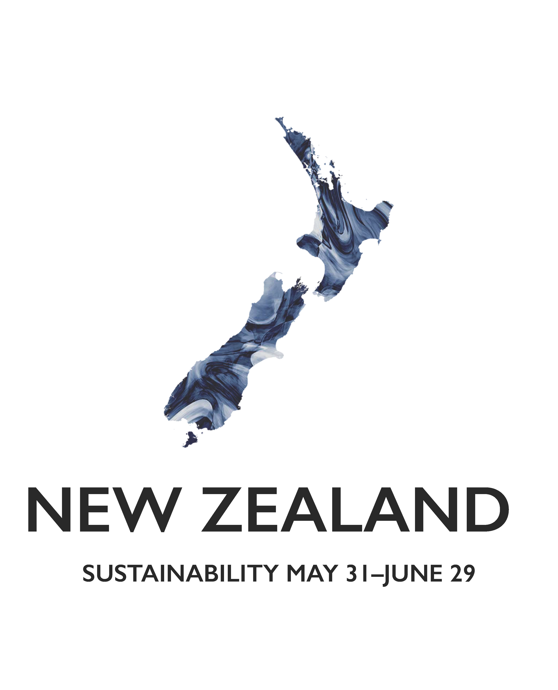
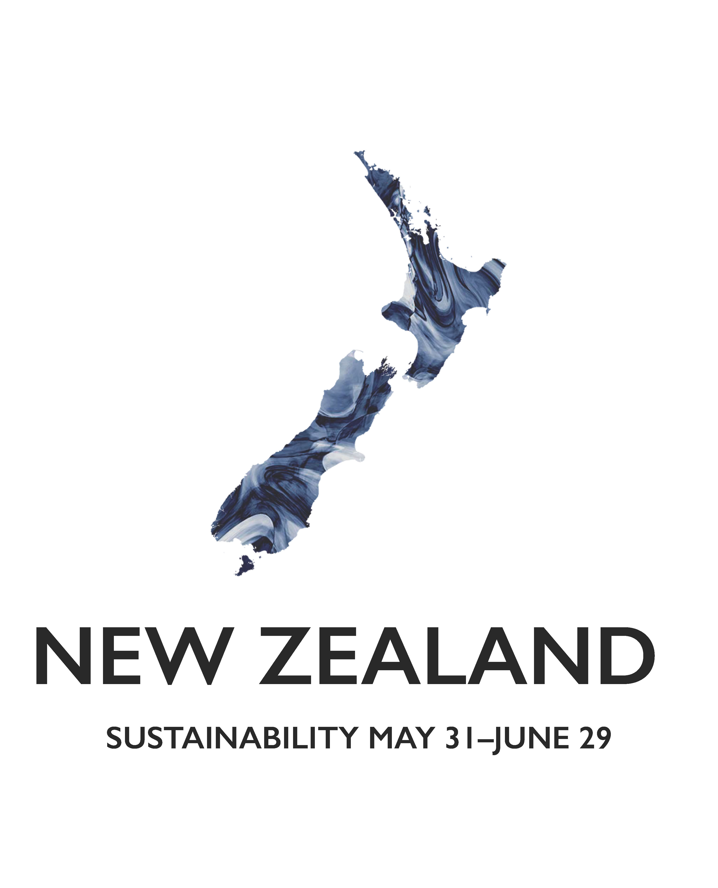

The task was to create a series of posters to advertise Pepperdine’s highly acclaimed International Programs, in an exhibition that students pass everyday. The main programs Pepperdine hosts are over the school year are black and white photos of famous landmarks in the location with the marble pattern being a color in the country’s flag. After finishing the first 7, the goal was to create something that complimented the images without being too busy and the solution was to highlight the shape of the country in the same marble pattern.